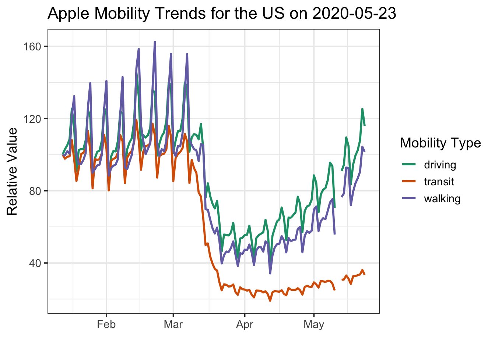
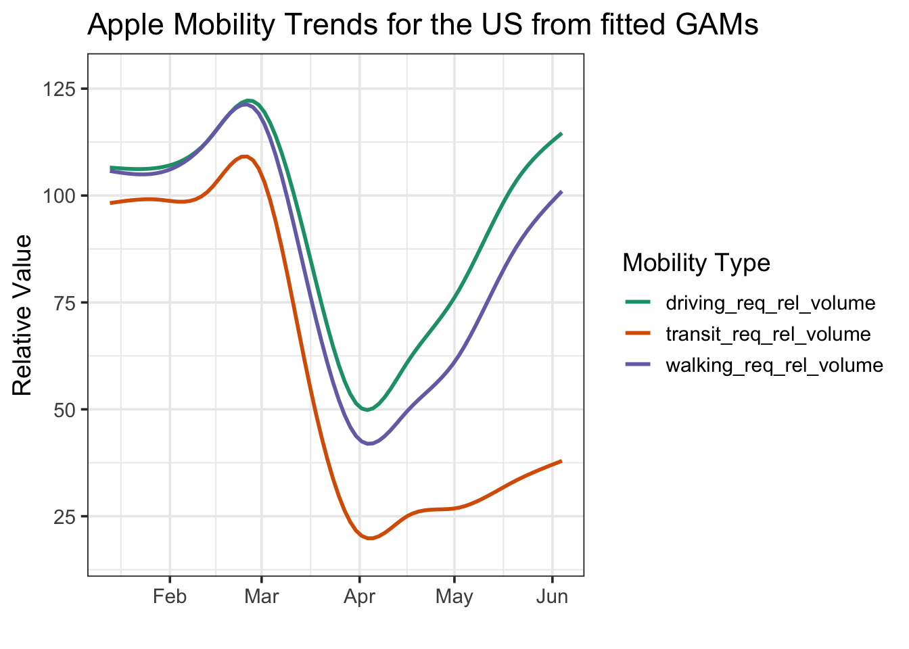
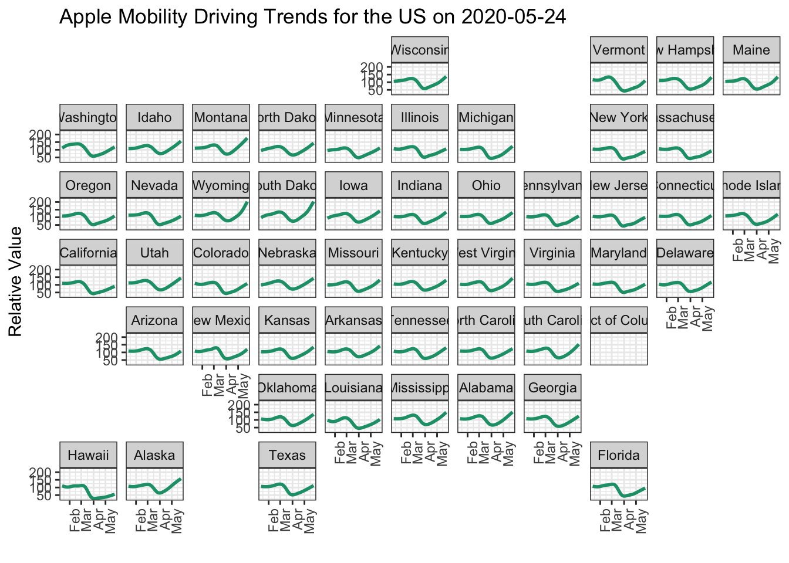
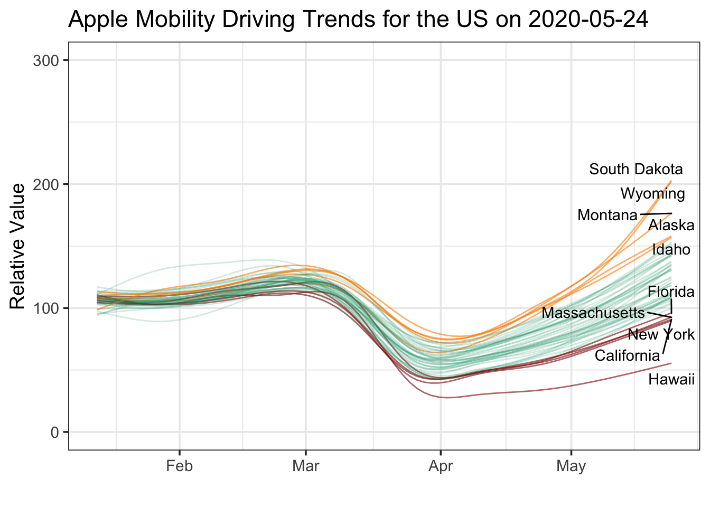

Roaring Back into Mobility in the US Post-Covid-Lockdown
As part of the Covid19R Project, I’ve been working on a new package, covid19mobility. It started as an effort to pull in the Apple Mobility Trends, and has since morphed as more mobility data comes out. Right now, I’m working through the Google Mobility Data, & I’m interested in the Descartes mobility data and any others you can suggest down below (link to source)! But the data itself - it’s FASCINATING!
As I finished getting the Apple data in (there are massive issues for all of the aforementioned data sets in terms of getting standardized location codes - I’m trying to use either the ISO 3166 2 standard for countries and states or the UN LOCODE for cities, and many of the states and cities have different names than those in the data standards. Watch me dplyr::mutate() and ifelse my way into oblivion)..
OK, that was a long rant, let me start over -
As I finished getting the Apple data in, I decided to check it out with a quick vignette. It’s Memorial Day, US states are starting to open up - I wonder what our traffic looks like? Now, note, Apple’s data is the relative volume of directions requests for each data type. So, let’s look at the US…
# remotes::install_github("covid19r/covid19mobility")
library(covid19mobility)
library(dplyr)
library(ggplot2)
#the data, filtered to the US
us_mobile <- refresh_covid19mobility_apple_country() %>%
filter(location_code == "US")
max_date <- max(us_mobile$date)
#now, a plot!
baseplot <- ggplot(us_mobile,
aes(x = date, y = value, color = data_type)) +
scale_color_brewer(palette = "Dark2") +
theme_bw(base_size=14) +
labs(color = "Mobility Type",
y = "Relative Value",
x = "")
baseplot +
geom_line(size = 1) +
ggtitle(paste0("Apple Mobility Trends for the US on ", max_date)) 
Wow. So, driving is basically back to where it was pre-lockdown. Walkign is coming back, but isn’t there yet. And transit is… nada. Looking at this using a GAM to smooth it all out shows the same thing (I know, I know, there’s much more complex and fun timeseries stuff to do here, but…)
baseplot +
stat_smooth(method = "gam", fill = NA) +
ggtitle("Apple Mobility Trends for the US from fitted GAMs") ## `geom_smooth()` using formula 'y ~ s(x, bs = "cs")'
The driving trend is really interesting. Is this really due to everywhere going up uniformly? To investigate, I pulled in the subregional data - for the US this just has driving stats. And then used the awesome geofacet package from Ryan Hafen to visualize. I’ll just use GAMs in order to facilitate visualization without the wigglies due to within-week variation.
library(geofacet)
state_mobile <- refresh_covid19mobility_apple_subregion() %>%
filter(country=="United States") %>%
filter(!(location %in% c("Guam", "Puerto Rico",
"Virgin Islands")))
state_baseplot <- ggplot(state_mobile,
aes(x = date, y = value)) +
theme_bw(base_size=11) +
labs(y = "Relative Value",
x = "") +
ggtitle(paste0("Apple Mobility Driving Trends for the US on ", max_date))
theme(axis.text.x = element_text(angle = 90, hjust = 1, vjust = 0.5))## List of 1
## $ axis.text.x:List of 11
## ..$ family : NULL
## ..$ face : NULL
## ..$ colour : NULL
## ..$ size : NULL
## ..$ hjust : num 1
## ..$ vjust : num 0.5
## ..$ angle : num 90
## ..$ lineheight : NULL
## ..$ margin : NULL
## ..$ debug : NULL
## ..$ inherit.blank: logi FALSE
## ..- attr(*, "class")= chr [1:2] "element_text" "element"
## - attr(*, "class")= chr [1:2] "theme" "gg"
## - attr(*, "complete")= logi FALSE
## - attr(*, "validate")= logi TRUEstate_baseplot +
facet_geo(~location) +
stat_smooth(method = "gam", fill = NA, color = "#1B9E77") +
theme(axis.text.x = element_text(angle = 90, hjust = 1))
So, a few places have stayed - Hawaii, Mass, and a few others - and others have gone WAAAY up - ND, Wyoming, Montata. Looking at it another way - we can really see how the top 5 states drive the trend up - BUT - with some exceptions, driving is still back to normal most places
library(ggrepel) #for labels
#fit a bunch of GAMs so that labels connect to the right places
state_fits <- state_mobile %>%
group_by(location) %>%
tidyr::nest() %>%
mutate(mods = purrr::map(data, ~mgcv::gam(value ~ s(as.numeric(date), bs = "cs"), data = .)),
data = purrr::map2(data, mods, ~modelr::add_predictions(.x, .y))) %>%
tidyr::unnest(data) %>%
ungroup()
# make labels for the top 5 states
tops <- state_fits %>%
filter(date == max(date)) %>%
group_by(location) %>% slice(1L) %>% ungroup() %>%
arrange(desc(pred)) %>%
slice(1:5)
# make labels for the bottom five states
bottoms <- state_fits %>%
filter(date == max(date)) %>%
arrange(pred) %>%
slice(1:5)
#merge in info about those states so we can highlight with colors
state_mobile <- state_mobile %>%
mutate(top_state = ifelse(location %in% tops$location, "top", "middle"),
top_state = ifelse(location %in% bottoms$location, "bottom", top_state),
)
# the plot - with labels! And colors!
# and a so-so job of using ggrepel!
set.seed(2020)
state_baseplot +
geom_line(data = state_mobile, stat="smooth",
method = "gam",
mapping = aes(group = location,
color = top_state, alpha = top_state),
size = 0.5) +
scale_color_manual(values = c("darkred", "#1B9E77", "darkorange")) +
scale_alpha_manual(values = c(0.6, 0.2, 0.6)) +
guides(color = "none", alpha = "none") +
#labels those states - must be a better neater way.... hrm....
geom_text_repel(data = tops,
mapping = aes(x = date, y = pred, label = location),
force = 5) +
geom_text_repel(data = bottoms,
mapping = aes(x = date, y = pred, label = location),
force = 5,
hjust = 0.5) +
theme_bw(base_size=14) +
scale_y_continuous(limits = c(0,300))
Surprised Florida is at the bottom, currently, but, really interesting to see how most states are mostly recovered in terms of driving. Now I want to run this after memorial day and see how it looks!